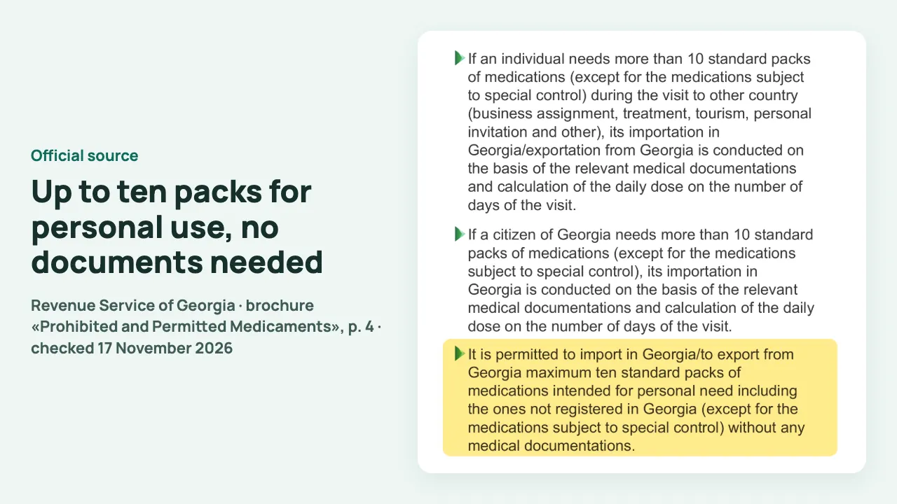
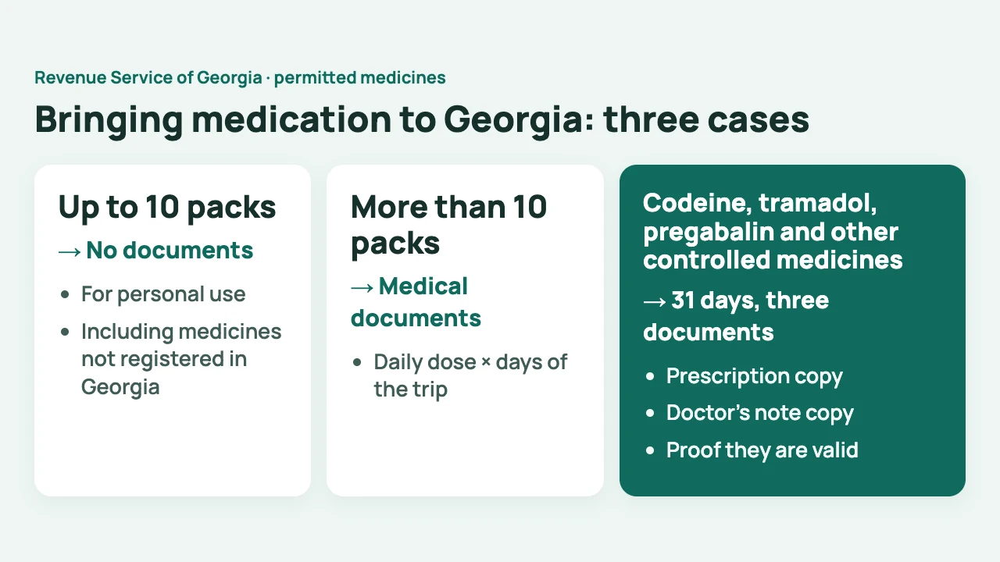
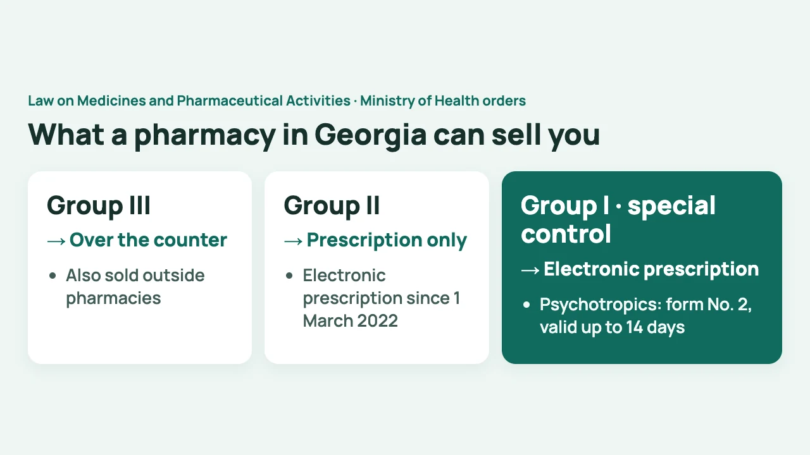

This page is about the country in the Caucasus — Tbilisi, Batumi and the mountains — not the US state. It is part of our guide to healthcare in Georgia. Checked on 17 November 2026.
What medicine is allowed in Georgia: the 10-pack rule
You can carry up to 10 standard packs for personal use without any medical documents. That includes medicines not registered in the country, but not those under special control.
The Revenue Service sets this out in its customs brochure "Prohibited and Permitted Medicaments" (undated brochure, checked 17 November 2026). The rule covers "medications intended for personal need including the ones not registered in Georgia (except for the medications subject to special control)".
The same 10-pack limit applies to foreigners and citizens. The UK government advises you to keep each medicine in its original packaging and to carry a doctor's prescription. It also warns: "Non-prescription medicines containing codeine are illegal" (GOV.UK travel advice: entry requirements).

Bringing more than 10 packs
A larger supply is allowed, but it has to be backed by medical documents. The brochure bases the amount on "calculation of the daily dose on the number of days of the visit".
In plain terms: your daily dose multiplied by the days of your trip.

Codeine, tramadol and other controlled medicines: 31 days with documents
You can bring these for personal use: a supply for up to 31 days, with a full set of papers. Without those documents, the brochure says, importing or exporting such substances "is considered as criminal offence according to the criminal code".
Which medicines are under special control?
Among the substances the brochure names:
- codeine and its compounds, such as dihydrocodeine, pholcodine and ethylmorphine;
- ephedrine, pseudoephedrine and combination products with them;
- buprenorphine, methadone and methylphenidate;
- pregabalin, tianeptine, tramadol, fentanyl and alprazolam.
The list ends with "all other narcotic drugs and psychotropic substances specified by the legislation of Georgia". Before you travel, compare the active ingredient printed on the box with this list.
Documents for prescription drugs you bring to Georgia
The Revenue Service brochure asks for three documents:
- a copy of the prescription, translated into English and approved by the authorised agency of the country you travel from;
- a copy of the note from the doctor who wrote it, translated and approved in the same way;
- confirmation from that authorised agency, signed and stamped, that both are valid.
Other official sources ask for less. The Consulate General of Georgia in New York, part of the Ministry of Foreign Affairs, mentions a medical prescription or a physician's note. It should show the patient's details and the name, composition, dosage and duration of use. The safer choice is to carry the brochure's full set.
To check your case in advance, GOV.UK points to the State Regulation Agency for Medical and Pharmaceutical Activities, regagency@moh.gov.ge. An assessment takes about a month, so write early.
At customs and during your stay
According to the consulate, you show the papers at customs together with a customs declaration; the brochure itself does not mention a declaration.
Two more rules from the brochure:
- Do not hand your pills to anyone else. Transfer to another person is strictly prohibited.
- If your supply runs out and you cannot leave, go to a medical facility where you are staying. Bring the papers certified by customs: on that basis a local doctor can register you and prescribe more.
GOV.UK adds a warning: "Even with a valid prescription, foreign nationals have been detained, prosecuted, and fined" (GOV.UK travel advice on entry).
Buying medicine in Georgia: what you can get over the counter
Only group III is sold over the counter. Everything else needs a doctor.
The law on medicines (Matsne, English text) sorts them into three groups:
- group I — under special control;
- group II — prescription-only;
- group III — over the counter.
Anything registered in the country that is not on the group I or group III lists automatically falls into group II. Groups I and II may not be sold without a prescription, and may not be sold to minors.
Where you can buy what:
- an authorised pharmacy sells all three groups;
- an ordinary pharmacy sells groups II and III;
- other shops sell only group III;
- markets and street stalls may not sell them at all.

Can you buy antibiotics without a prescription in Georgia?
Do not plan on it. Under the law on medicines, everything registered that is not on the over-the-counter list is prescription-only, and antibiotics are generally treated as prescription medicines. See a doctor, who can prescribe them electronically.
If you think you need them, see a doctor during your trip. The doctor decides on treatment and, if needed, prescribes them electronically.
Will a pharmacy accept your prescription from home?
Do not count on it. We found no rule that makes a paper prescription from abroad valid here.
Since 1 March 2022, group II drugs have been prescribed electronically, under Order No. 01-17/N on electronic prescriptions (Matsne, Georgian text); paper is kept only for rural doctors and system failures. Since 11 April 2022, psychotropics need electronic form No. 2, valid for no more than 14 days, under Order No. 01-31/N (Matsne, Georgian text).
Electronic ones are tied to the patient's personal number. If you have no local personal number, ask the doctor or clinic how they will issue it.
Pharmacies in Georgia: chains and opening hours
Large chains cover Tbilisi, Batumi and other cities; maps and city guides list some branches as open round the clock. All pharmacies in the country are private, and most medicines are imported, according to the EU Asylum Agency's MedCOI report (2025).
The large chains:
- GPC — 104 branches, according to Gepha, its parent group;
- Pharmadepot — also part of Gepha; both chains take online orders on their websites and apps;
- PSP — a chain with an app and delivery across the country;
- Aversi — another large chain.
Opening hours differ from branch to branch, so check the branch on a map before you go.
If you fall ill on the trip: who pays for medicines
Whatever you buy yourself, without a doctor, you pay for. IRAO, the insurer behind the travel policy sold on 100doc.ge, does not reimburse self-medication. If a doctor treats you for a sudden illness, IRAO pays for medicines for outpatient emergency treatment up to 2,000 GEL, according to the IRAO policy wording.
Since 1 January 2026, foreigners must enter with health and accident insurance of 30,000 GEL, as Georgian law requires. Our guide explains the 2026 entry insurance rule.
On IRAO plans there is no deductible. Its assistance line, +995 32 2 949 949, works around the clock; call it no later than 24 hours after you fall ill.
If you have not arranged cover yet, look for travel insurance that covers emergency treatment. In an emergency, dial 112 first: here is how to call an ambulance on 112.
Frequently asked questions
Can I bring codeine to Georgia?
Only for personal use, as a supply for up to 31 days and with the full set of papers. It is on the Revenue Service list of controlled substances, and the UK government warns that travellers have had problems even with a prescription.
Which medicines can't I bring into the country without documents?
Narcotic and psychotropic ones, such as pseudoephedrine combinations, pregabalin, methylphenidate and alprazolam. The full list is set by local legislation.
How many packs of medicine can I bring to Georgia?
Up to 10 standard ones for personal use with no paperwork, unless they are narcotic or psychotropic. More needs medical papers.
How long is an electronic prescription valid?
An electronic one for psychotropics is valid for no more than 14 days. For anything else, ask the doctor who issues it.
Will a pharmacy accept my prescription from home?
We found no rule that makes it valid. Prescription-only medicines are prescribed electronically here, so plan to see a local doctor.
Is there a 24-hour pharmacy in Georgia?
Hours differ by branch of each chain. Check the branch on a map before you go.
Sources
- Revenue Service of Georgia: brochure "Prohibited and Permitted Medicaments" (undated, checked 17 November 2026)
- GOV.UK: travel advice for Georgia, entry requirements
- Consulate General of Georgia in New York, Ministry of Foreign Affairs: bringing medications into Georgia
- Law of Georgia on medicines, consolidated version of 30 November 2023 (Matsne, English text)
- Order No. 01-17/N of 26 February 2022 on electronic prescriptions (Matsne, Georgian text)
- Order No. 01-31/N on electronic prescriptions for psychotropic medicines (Matsne, Georgian text)